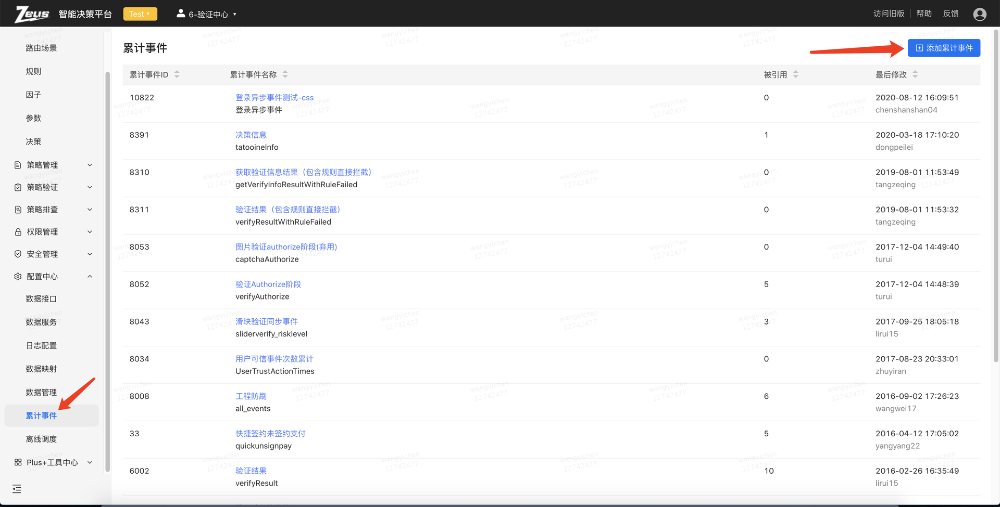
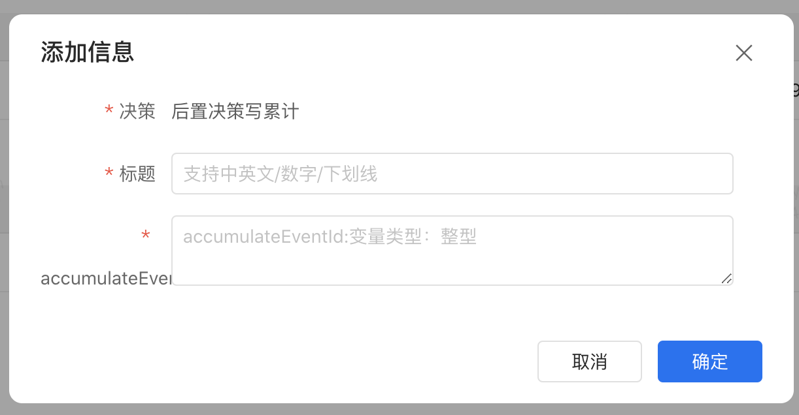

说明：后置决策——写累计
首先需要在https://zeus.sankuai.com/data_zeus_static/#/accumulateEvent这里新建一个累计事件，

然后用新建的累计事件id在https://zeus.sankuai.com/data_zeus_static/#/decisionInfo?id=1884这里的附加信息中配一个信息列表，也就是赋值给accumulateEventId

之后可以作为规则的决策使用
保存日期：2026-11-17 · 查看学城原文
首先需要在https://zeus.sankuai.com/data_zeus_static/#/accumulateEvent这里新建一个累计事件，

然后用新建的累计事件id在https://zeus.sankuai.com/data_zeus_static/#/decisionInfo?id=1884这里的附加信息中配一个信息列表，也就是赋值给accumulateEventId

之后可以作为规则的决策使用